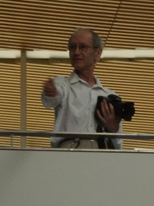
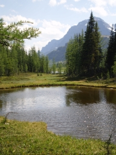

Two trips to Canada, May and July 2009
Ottawa and Montréal
|
Banff
1. Ottawa and Montréal, May 2009
The purpose of the trip, squeezed in during the exam period, was to
attend two conferences: the Ottawa Discrete Mathematics Days, a small two-day
meeting organised by Mike Newman, who had been a post-doc in London a few
years ago, and CanaDAM, a huge four-day conference in Montréal. The
exam for the course I taught this year was sat while I was away, and on
return I would be faced with nearly a hundred and forty scripts, with just
three and a half days to mark them.
21 May
I'm not at all prepared for this trip. I realised, on the tube to the airport,
that I had no Canadian currency and no label for my bag. All the trains
came expeditiously and (given that I had already checked in) I was, as usual,
at the airport far too early.
A sunny day with elder and broom in full flower and luxuriant vegetation.
At Heathrow, no need to queue since I only had hand baggage; the queues for
the bag drop seemed as long and slow-moving as normal check-in queues. The
passage through immigration and security seemed even more trying than usual.
I was asked to take everything out of my pockets and remove my belt (the
trousers I was wearing don't stay up without it) and even got into an argument
about whether the white toy is a laptop. It wasn't clear whether we had to
go through the shoe check or not: some exits from the X-ray machines led to
it, others didn't.
No luggage labels at any of the Smiths' at the airport. Of the two before
security, each tried to send me to the other. The one past security only had
books, so I did buy one (having, of course, left behind the one book I had
bought for the journey).
I sat down to wait. Fortunately someone left a Telegraph on the seat beside
me, so I picked it up and read it. It also had some puzzles (the regular and
quick crossword and the Telegraph Toughie, a couple of sudoku, a killer
sudoku, a codeword) which kept me going until halfway across the Atlantic.
Boarding started after a short delay, and we pushed back right on time. But
some further unexplained delay in starting the engines meant it was half an
hour before we were airborne. The man in the window seat beside me introduced
himself as a dentist who had studied in Manchester and now lives in Canada,
going to Montréal for his son's graduation. He kept the shutters down
for almost the whole flight.
When I had done the puzzles, I listened to music for a while (the Band,
Motown classics, and Sonny Boy Williamson), and then tried to find where
we were, but was told "flight data unavailable". Clearly only a local
problem, since other people were watching it.
We landed about ten minutes late, and there was a further delay. First we
were told that we would park off-terminal and be taken to the terminal in
buses. Then they changed that: we went to a gate in the domestic terminal
and were taken by buses from there (directly off the plane). By great
good fortune I was at the back of the plane, the end which deplaned first,
and got through immigration and customs quickly. (The immigration officer
was a bit fierce but the customs man very good-humoured.) Outside I asked
someone for the bus stop for the transit bus to the station, and found I
was almost at it and the bus came almost immediately.
The trip was a bit nail-biting, since there was a lot of rush-hour traffic
and some very long-period traffic lights. As the bus pulled up, there was
a train pulling in to the station. I assumed it was the one I wanted, but
went to the ticket office anyway; the man assured me that the Ottawa train
was next, five minutes later, and sold me a ticket, even giving me a discount
for being a Senior! So I caught it with plenty of time.
|
We were off, through the outskirts of Montréal, and across what may have
been the Thousand Islands, lots of fast-flowing channels breaking up the
land. Then the country, first dead flat cultivation (with hills in the
distance), then forest, then what seemed to be pasture but there were no
animals in sight. Little towns had churches with elaborate spires. At a
level crossing coming into one town, firemen were standing around a
blackened and soaked car, where they had presumably just put out a fire.
The sun shone brightly at first, but then sank into some lovely cirrus
clouds. As we came suddenly into Ottawa station, it was just setting.
|
|
The station seems to be cut off from anywhere by huge roads. So I didn't
even try to walk, but took a taxi. The first half of the journey again
involved getting round huge traffic interchanges with slow traffic lights,
but once we were on the way, it was quite quick. I got my hotel key, went to
my room, and went to bed and slept.
22 May
I woke early, but had no trouble getting back to sleep until nearly six,
when it started getting light. So I got up, took a bath, and went down to
breakfast.
It was a morning of several discoveries. First, I had come without the
second pair of trousers that I had intended to pack (and was fairly sure
I had done so), so I have only the ones I travelled in to last me a week.
Plenty of shirts, though.
Second one came when I tried to walk down the stairs to breakfast. The
stairs ended in an alarmed door. So I walked back up to the second floor
(North American style), and took the elevator down. I got in and fumbled
for the right button (which happens to be L), and was helped out by a
German couple who just got on. The door closed and the elevator moved, and
when it stopped we got out, to discover that it had taken us to the fourth
floor! So we jumped back on (along with a lot of other people) and tried
again.
The breakfast room opens at 6:30. It was almost deserted at 7 but filled very
rapidly, mostly with elderly German couples (no idea why). The buffet was only
slightly more expensive than having juice, coffee and one breakfast dish from
the menu, so I went for that; really worth it.
Back in my room, third discovery was a pleasant one. I had brought an adapter
but not a transformer. So I was delighted to find, in the small print on the
white toy's power lead, that it can cope with 110 volts at 60 cps. I just
plugged it in, and away it went. The hotel has free internet access; you can
even take your choice of wireless, a high-speed cable, or surfing the web
on the television (using the handset as a keyboard). So I was able to read
my email, check out the Save LMS blog, and bring the CSG web page up to
date.
It was time to set off, but I didn't really know the way, and ended up
going by a rather indirect route. I arrived just after 9, the official
starting time (for registration and coffee). The registration consisted
simply of picking up a name badge from the desk in the front of the lecture
room.
Many old friends were there beside Robert and Mike, including the girl
who won the competition at the IPM conference in Tehran in 2003 to find
out the invited speakers' middle names (she simply asked us all!), and
people like Luis Goddyn whom I met in Burnaby when I visited Dugald there.
It was a day of very nice talks; not a bad one among them, and a great deal
of variety. The three main talks were by Ron Canfield (in two parts, the
first on the problem of whether the Stirling numbers of the second kind can
repeat their maximum value (for given n), the second, a curious thing
about
the number of non-negative integer matrices with constant row and column sums,
involving giving an exact formula, an approximation, and a confidence interval
(whatever that means!); by Patric Östergård, on the "Russian dolls"
method for clique search problems; and by Heather Jordan, on generalisations of
Skolem sequences and their use in constructing cyclic cycle systems(!).
The contributed talks were all good too. It is invidious to pick one out,
but I have to mention Alois Panholzer, who gave a lovely talk about his very
detailed analysis of the asymptotics for the parking problem.
For lunch we went to a restaurant on campus but found (as expected) that it
was full, so we went on to a nice pub, the Royal Oak, just off campus. It
was warm enough to sit outside. I had a pint of ale from a Toronto
microbrewery (and still didn't fall asleep in the afternoon) and a
California chicken club sandwich (the first word means "with avocado").
After the talks, there was a reception in the lounge of the Maths department.
Nice light food (actually all I needed after a big lunch), no alcohol
(supposedly by regulation, although it was wryly remarked that there is
an alchol-fuelled Christmas party in that room every year). I talked to
several people, especially Robert and Rod Canfield. Robert had been asking
Rod about something which will go in our survey paper, but we talked a lot
about more general things.
Several people asked me if I have been to Ottawa before. I think I have, but
am not completely sure! (I am old enough that I suppose this is allowed).
If so, it was for a very short visit a long time ago. I have a faint
recollection that I was visiting Mike Atkinson, which would probably narrow
it down.
|
After a while, I made my excuses and left. I was a bit tired, but mainly I
wanted to explore a better way of walking from the hotel to the conference.
I found a tunnel under the busy road (this involved a bit of a backtrack
search, but it comes up very near the building where the conference is),
crossed the canal on a footbridge, and walked down the left bank towards the
centre of the city. This was a bit difficult, because of obstructions,
some to do with a marathon coming up shortly which will finish here, and
some caused by building works. But eventually I found my way to the
spectacular flight of eight huge locks which take the canal down to the
river. The sun was getting low, and there was a lovely light over everything.
Two people came under a bridge on the other side, casting huge wavering
shadows, but I didn't get my camera out quickly enough.
|
|
|
I walked down to the bottom, and crossed over the bottom lock and went up
the other side. I found I would have had to follow the two people I saw
earlier on a very narrow ledge under the bridge, so I crossed back over
the top lock and up onto the road, and crossed back on the bridge. Then I
found a way down to the other towpath, walked down to the next bridge,
where a circular staircase took me up and a short walk brought me back to
the hotel as the sun was setting.
I read my email again, wrote up my diary, looked over my notes for the
next day (I am the first speaker), and then it was bedtime.
|
|
23 May
In the night I woke up with a burning throat. I wasn't sure whether it was
a cold coming on or just the effect of the stale air-conditioned air of the
hotel. But by morning it was clearly the former.
I had a bath, and did a sudoku while soaking - in fact it was what is called
an "engdoku" in the student paper, using Greek letters instead of numbers.
This makes it much harder: looking for where to place an alpha is OK, but
figuring out what is missing in a row is quite challenging. It mut be much
harder for people who are not mathematicians and don't know Greek; apart
from anything else, having names for the letters helps thinking about them.
|
After breakfast I read my email, then set off for work, intending to look for
vitamin C (as well as toothpaste) on the way. There was a Sears with a huge
shopping centre behind it; some things were open, but when I finally found
the "Shoppers Drugstore" it didn't open until 9. Escaping from the shopping
centre was not easy either, and I found myself almost back at the hotel. So
I started again and followed my chosen route, which worked very well. (Mike
says that the reason that bridge is so long is that it used to go over the
railway as well as the canal, but a town planner who didn't like trains
replaced the railways with four-lane roads where people drive like maniacs,
in the name of creating a proper capital city.) There was also a drugstore
on campus, but it didn't open until 10.
|
|
On the way I did see some wildlife. Birds, like blackbirds or thrushes (they
hopped; the males fought) but with chestnut breasts, probably American robins;
and a black squirrel straight from Mirkwood.
My lecture was first. Mike gave me a stunningly generous introduction; if I
had felt better, I might have done a better job of living up to the picture
he painted. As usual I had a lot of material, but did finish on
time, and got a lot of questions (and hopefully created some interest). I
failed to answer Luis Goddyn's question, because my brain had gone to sleep.
After coffee we had lectures from Robert and John Arhin (wearing a Bethnal
Green T-shirt, introduced by Mike in a Hackney T-shirt) and Anthony Bonato,
who posed a question about the Urysohn space which I think I can answer.
At lunchtime I felt more ill and not hungry, so went to the campus pharmacy.
I got 1000mg vitamin C, which were a fraction of the price of the 500mg ones,
also toothpaste and some stuff to help flu symptoms (which I hope I won't need).
I found the local issue of the Epoch Times, which I remembered fondly from
Auckland, and so picked up a copy. Definitely more anti-Chinese here than
in Auckland.
Then I went back to the SITE building. Lots of people were eating Chinese food
but I couldn't find where it came from and didn't feel strong enough to look
very hard. So I took a vitamin C and sat and wrote my diary while I waited.
The afternoon lectures were a trial. By now my temperature was way up, and
my throat sore, and most of the talks didn't catch my attention enough to
overcome this. Bill Sands gave a nice talk about the following problem: Given
n, find all minimal intervals such that the following is true: for any set
of n cards, each with n non-negative real numbers summing to 1, there is an
ordering of the cards such that the sum of the first number on the first card,
the second number on the second card, ... lies in that interval. It is
solved for n=3 and n=4; curiously, both cases fit the pattern
that the intervals are [i/(n-1), 1+i/(n-1)]
for i=0,1,...n-1. But he can't prove it
in general.
I told Mike that I was not feeling up to a party, but he was very insistent.
So I went back to my hotel room, took a painkiller, and lay down for a nap.
I woke up at 7:30, the start time of the party, feeling sufficiently much
better that I could face going. So I walked there (in 35 minutes, mostly
along the canal). Runners were finishing a race on the other side, either 5km
or 10km; they were going very slowly. I went round the bend in the canal,
under the expressway bridge, across the next bridge, and found my way to
Mike's place, crossing over what looked like the end of a canal basin.
I stayed for an hour and a quarter, talking mostly to an economist who works
on transport planning policy, and to Robert. Then I decided to go; I wasn't
feeling bad but was quite tired. I went back to the hotel a different way
(straight up O'Connor Street and over the bridge) and went to bed.
24 May
|
I woke feeling a little better. I checked out the CanaDAM website: I am
talking on Wednesday morning, and I was supposed to have booked accommodation
myself. Never mind, I went to the student residences webpage (now re-branded
as a hotel with soft-focus pictures) and made a booking, getting confirmation
almost immediately.
Then I took another vitamin C and went down to breakfast.
The headline in the local paper described the competitors in the race as
"runners, joggers, and shufflers". It was certainly the shufflers that I
saw!
|
|
Back in my room, I wrote out some notes for Robert on what the distinguishing
number (which Anthony Bonato talked about yesterday) has to do with our
project. I decided that the base size of a wreath product in the product action
is bounded above by the sum of the base size of the bottom group and the
logarithm of the distinguishing number of the top group rounded up, where
the base of the logarithms is the degree of the bottom group. I am sure this
is not new, and pretty sure it is right for the automorphism groups of cubes.
|
Then I packed, took a painkiller, went downstairs, and checked out.
I went outside. It was a glorious day: clear blue sky, dazzling sun,
light cool breeze. I went over the road to Sears, to try to buy a pair
of trousers, but they don't open until 11 on Sunday. So I went instead
to the ByWard market.
The market seems to specialise in flowers and plants, especially hanging
baskets which they had in great profusion, with a certain amount of
gourmet food and some Canadian souvenirs. It has many cafes, so I had a coffee
and sat for a while killing time.
|
|
Observations on Canadian French: "OK" is a very common expression; and rather
than "courgette" they say "zuckini" if one stall is to be believed!
Then I went up York Stairs, dodged through the marathon runners, and went into
the nice little Major's Hill Park overlooking the river and the canal locks
with a fine view across the gap to the Parliament building. I read about
Colonel By (who built the Rideau Canal and founded Ottawa).
|
I walked out of the park to the start of the Alexandra Bridge, a long and
somewhat decrepit bridge leading over to Gatineau on the Quebec side of the
river. Pedestrians were on an outside deck, the main lane of the bridge being
used by runners, though by this stage they were not even shuffling, rather
staggering. At my speed, which was a gentle tourist stroll on a sunny day,
I was overtaking them. I felt this to be rather disgraceful: why enter a
marathon if you can't do better than this? At the end of the bridge, two
paramedics were treating a casualty, who was wrapped up in aluminium foil
as if ready for the oven.
|
|
Back along the canal, and into the Rideau Centre, where I went into Sears and
bought a pair of stripy(!) trousers. They were 30% off in the sale, and
a further 10% with their "scratch 'n' save" scheme. All of the toilets were
broken, but I had another coffee before going on my way. Sad to say, it
was so watery and tasteless that I couldn't drink it.
I bought a bus ticket and went across the road to wait for the bus to the
station. There were Robert and Andrea Burgess also waiting for the bus, which
was just as well since it was not at all clear which bus to catch (it didn't
have a number) or where we had to get out. The bus routes have been disrupted
by the marathon, it seems.
At the station, we bought tickets and lunch and I told Robert about my
thoughts on distinguishing number. Then it was time to queue up to get the
train.
I sat in the sunshine, eating my lunch and enjoying the view, as we rolled
acrss Quebec. Little fluffy clouds rode in the sky, and yellow flowers
shone in the meadows; a heron started from a stream, and a deer bounded
across a meadow.
We arrived in Montréal (the train makes a very long detour and
approaches the city from the east). We trooped after Robert looking for a
metro station; finally some locals took pity on us and sent us back into the
train station. It was quite easy from there, one change only, and a short
walk to the residences.
First glitch, they didn't have my reservation in their printout, and I had
forgotten to write down the booking confirmation number. But they found it on
the computer eventually, and we went to our rooms on the 14th floor (of which
you have to walk up to the 7th before catching the elevator).
|
We found that the rooms had not been cleaned: the floors unswept, no clean
towels, beds not made. Robert phoned and complained, and they offered to
change our rooms, which meant traipsing back down to reception to get new
keys and then back up again.
The new room had a nicer feel to it, and was on the side with a view over
the back of the city, with the Olympic stadium clearly visible. However,
needless to say, the internet connection didn't work! So I had a rest, for
longer than I had intended, and went out at about 8 for something to eat.
|
|
|
I walked towards Côte des Neiges. The sun was setting over the flat
suburbs of Montréal and everything was bathed in golden light. I found
a pizza restaurant and went in. It wasn't quick, but the pizza when it came was
tasty, and they brought chili oil to help penetrate my bunged-up taste buds.
Walking home, it was not quite dark; the street lights shone on new maple
leaves.
Back in my room, I discovered a quirk of the lights. Two buttons by the door
where light switches should be have no effect; the lights, in the middle of
the room, are controlled by small chains.
|
|
25 May
I had a quite dreadful night. My throat hurt, made worse by an irritating
cough; my nose ran. The fridge kept switching on and off, and the room was
unbearably hot. Finally I realised that the last two things were connected
and fixable, so I got up, turned the fridge right down, and opened the
window a bit. The view of the city lights was quite wonderful.
Then, having realised I can do a bit more on bases for wreath products, I
wrote that up before going back to bed. The bound is attained if the bottom
group is transitive on its bases and its degree is at least as large as the
distinguishing number of the top group. I also realised that the bottom group
being an IBIS group is not enough.
I dozed as the light came up, and went down to breakfast quite early. A low
band of cloud at sunrise had turned int a speckling of clouds across the sky,
and the air was quite chilly.
There were quite a few people I knew at breakfast, and others who were quite
obviously mathematicians. But, sad to say, I'd lost my voice, and so was
unable to be very sociable.
After breakfast I wandered over to the university, and found some other
people heading that way; but they seemed to have not much more idea where
to go than I did, and tried to get through the main building (which is
quite impossible). But eventually we found our way there.
It turned out that, not only had I not reserved accommodation, but I had not
registered either. Perhaps they emailed me about it and it went astray;
certainly I have diligently searched through all my emails and not found
anything relevant. Anyway, that was done without fuss, and I had time to
try out the wireless network (it works flawlessly), and
send the file to Robert (and even check that it compiled) before the opening.
After some speeches, Sylvie Corteel gave the first talk. Unfortunately, the
projector was misaligned and the only way she could get the entire slide on was
to make it very small; in addition, the screen flickered; and the microphone
was feeding back. So I'm afraid she didn't get my full attention.
After that, I talked to David Richter about a nice idea connecting Euclidean
nets with Tait colourings of cubic graphs, then went off to hear Christophe
Reutenauer's talk, only to find it had been cancelled. So I logged on to the
Save LMS blog and posted Alice Rogers' letter (having got her permission to
do so), before going off to hear Karen Meagher and Mike Newman. After Karen's
talk I was able to report what David Ellis had said in London last week, and
my voice was almost audible (a good sign!)
I had noticed a little cafe in the building where the plenary talk had been,
so headed there for lunch. They had a nice cheap hot meal: poached salmon
with rice and vegetables. After lunch I talked to Robert about the base
size for Hamming graphs with alphabet size 3 (the exact result is known; our
simple bound is met a fixed proportion of the time and never off by more
than one).
The afternoon plenary had the problems of the morning one, somewhat modified,
and in particular the sound was dreadful. It was by a biologist, who lost
her place rather dramatically once with the memorable line "That's not my
talk!" and hunted through the files on her computer; finding nothing better,
she continued with the one she was using.
After the break, I intended to go to a couple of talks, but with a few
minutes to go I sat down in a comfortable armchair in full sunlight (through
the plate glass) in the company of Richard Nowakowski, Cathy Baker, and
Antony Bonato. That was the end. I stayed there until Antony left and Richard
decided the sun was too hot (Cathy and I, both having lived in Brisbane,
were perfectly happy).
|
So we moved to a table in the shade, where Peter Winkler joined us and got out
two puzzles, both very beautiful and very fiendish in their way. One involved
packing four awkward-shaped tetrominoes into a frame slightly less than
6 by 5 units, which Richard and Cathy tackled without success. (I had a quick
go and failed too). Peter didn't know how to do the other one, which consisted
of two identical pieces in dark metal like bronze with a patina, trapping a
neatly-fitting shiny ball. It came with no instructions, the puzzle presumably
being to take it apart. I noticed that the shiny ball had a curved line
engraved on it which seemed to have a very small amount of give. Peter
discovered that by aligning the lines on the ball very carefully with the
curves on the outer pieces, it was possible to make the ball come apart. Then
taking the whole puzzle apart was all too easy and soon accomplished, and
Peter was left with the harder job of putting it back together.
|
|
While we were doing this, the reception started, so after a while we got up
and circulated. I found myself having a long conversation, mainly about the
LMS, with Robert and Ross Kang. After a while Ross went and I made an excuse
to circulate. I ran into Karen Meagher, and Robert joined; unfortunately the
sun was in Karen's eyes and she didn't really want to hear about a foreign
squabble, so she went off and left me to Robert.
I was starting to fade by this point. Antony had invited me to dinner at an
Indian restaurant twenty minutes' walk away; I said probably not but I would
come if I felt up to it. But clearly I didn't, so I went home. It will be
a very great pity if, as seems likely, I don't get to walk anywhere in this
lovely city!
I took a high path through the wood and came down at the back of the tower
blocks. Unfortunately the key letting me in to the main door didn't work on
the doors here, so I had to scramble down a bank to reach the door I could
open.
I got to my room and lay down on the bed. Next thing I knew, I was woken by
a shout; it was pitch dark. So I undressed and got into bed.
26 May
For the first part of the night I was tormented by nightmare fantasies about
the LMS or events in the novel I am reading. My temperature was quite high.
But this passed (the crisis of the fever, I hope) and I slept well. In the
morning my throat was still in bad shape and my nose blocked but I felt
more human than in recent days. Dare I hope I'm on the mend?
But when I tried to talk to people at breakfast, I found that my voice was
in worse shape.
On the way to breakfast, I found that a big hole had appeared on the path; so
I had to scramble down another bank.
After breakfast I walked over to the conference. I read my email and found
one from Maurice Dodson to post on the Save LMS blog. Editing is difficult on
this small screen since for some reason WordPress obeys line ends (unlike
normal HTML) and on the small screen they are hidden by menus. I wonder if
he and Alice actually think that the people who read that blog will take any
notice of them - but I am all in favour of letting them have their say, as a
small contribution to reducing tensions.
|
Joel Spencer gave a lovely talk about the history of the Ramsey number
R(3,k).
Its asymtotics are determined up to a constant, but there are still
interesting things to say, including a plug for the next talk, by Robin Moser,
on a constructive version of the Lovász Local Lemma.
Between the talks, Geňa took the conference photograph from a walkway at
the top of the stairs, with much hilarity. Vasek Chvatal told me that he has
tried out the elementary walk-counting argument which proves the Friendship
Theorem on arbitrary strongly regular graphs, and found that it gives nothing
at all that the eigenvalue methods don't give (a pity!).
|

|
After Moser's talk there was nothing that really drew me so I sat out for a
while. I got lunch at the same place as yesterday: they had sesame chicken
today, again cheap and good. Then I thought some more about bases for wreath
products. I now understand it completely, and have a general theorem which
includes all known results as special cases. Trouble is, it is not quite a
formula, though it can be converted into one in many special cases (and I
think probably for any IBIS group). I just emailed it to Robert when he walked
in and sat down, so I told him abut it. Several times this week I have wondered
why I bothered coming to CanaDAM - it is far too big a conference, and not a
high enough density of interesting stuff - but I think this is sufficient
reason.
I had a busy afternon; first a talk by Carsten Thomassen, then two I wanted to
hear in the Design session (Clement Lam trying to construct strongly regular
graphs with specified automorphisms, and Patric Östergård on
analysing his
catalogue of the eleven billion Steiner triple systems on 19 points), then
back to the Graphs session to hear Luis Goddyn talking about excluded minors
for bicircular matroids, and finally Joan Hutchinson doing a tribute to Mike
Albertson who died in March (of thyroid cancer). I wanted to hear that since
he had introduced the concept of distinguishing number for graphs, but I
didn't learn anything new.
I walked down the hill past the residences. Today there have been lots of
starlings around, and a few sparrows, and I also saw a grey squirrel.
I decided to look for a sandwich in the other direction. I vaguely remembered
a convenience store from an earlier trip, but either I was wrong or it has
disappeared. Bd Eduard-Montpetit winds and turns into Bd Mont-Royal, lined
with houses much too posh to allow a convenience store in the neighbourhood.
Then it meets the big road and all of a sudden it is a slum, with a few
fast-food joints. At least there was a petrol station that could sell me a
sandwich. I walked back along a different road, went to my room, ate the
sandwich, and went over my talk ready for the morning, then turned in early.
27 May
I slept fairly well, woke up early, and finished reading the book. (Had I
been feeling bouncy, I would probably have stayed up late eating and drinking;
this will be better since I will have to get straight to work when I get
home with no time to adapt to the jetlag.)
Not the best novel I have read, but I like novels from which I learn something,
and that was the case in this one: a snippet of the history of Ferguson
tractors. Apparently Ferguson made an agreement with Henry Ford to make
tractors with Ferguson's three-point linkage (these were the Fordsons). But
when Henry Ford died, his son tore up the agreement (if you can tear up
something made with a gentleman's handshake), and Ferguson had to make a new
deal with Vauxhall to get his tractors produced. There was a later deal with
Massey-Harris (which impinged on my life) but she doesn't get to that.
The fact that I can think about going home, rather than just surviving
this ordeal, may be a sign of recovery. It was such a comedown from a
nice hotel in Ottawa to this squalid dump where many things don't work;
home seems very attractive even if there is a long unpleasant flight first.
(But when I looked in the mirror, the person who looked back was rather
gaunt.)
I've been to Montréal many times, and have had some really good and some
really bad experiences here (the latter mostly health problems). Just past
where I walked last night was a park where the Hare Krishna people were having
a carnival on one of my visits. Of course there was a wonderful meal in a
bakery-cum-gallery organised by Geňa, and another time when at his
apartment we made music almost until dawn. But this time it looks like I will
see nothing nice: just this sordid residence and featureless lecture rooms.
I must have been a bit earlier at breakfast: there was no juice, no fruit, and
no paper napkins. They all eventually appeared.
They had forecast heavy rain for today, but it hadn't arrived; so I put my
waterproof in my bag after breakfast, and set out for the lecture rooms to
read my email. I saw the news from Peter Cooper about Brian Davies retiring
as LMS president, and was inspired to put a little rant on the blog. Surely
people will see now that this has gone too far?
The first talk was by Jesus de Loera, who gave such a good talk in Auckland.
This one was a bit more showy, and probably further from my interests, but
still a most entertaining performance.
I didn't stop for coffee but went straight to the room where I was to speak.
There was no computer, so I tried out the white toy which worked fine. Then
an organiser came along with a computer, so I decided to use that instead.
The first speaker wasn't there (as neither were the fourth and fifth), so we
sat around until it was time for me to start.
Adrenalin is such a remarkable drug. I was able to squeeze enough volume out
of my voice to be more or less comprehensible, and I covered a lot of ground.
There was a big audience - the room almost completely full - and I could
see that many people were following.
Afterwards I stayed on for the rest of the session and heard talks by Bruce
Richmond and Ed Bender.
Had a nice lunch, and a long chat to Geňa, who was recording a radio
programme but was able to take his headphones off once he was sure that the
recording was progressing. I also saw Robert Woodrow and Ivo Rosenberg.
After lunch, the first speaker was talking about interesting stuff on the
relation between discrete geometry and combinatorics of words. I must admit
that I fell asleep. (Another good sign, I think; I have felt too lousy to
sleep through lectures at the meeting before now.)
Then I heard my co-author Jason Bell in one session, sat out for a
while (talking to Robert about our paper) and went to hear about adiabatic
quantum computing. Learning what this is was probably more valuable to me than
the detail of the talk. I stayed for the following talk, which had an implicit
challenge which my brain was too tired to cope with. Given a symmetric matrix
over GF(2) with ones on the diagonal, show that its row space contains the
all-1 vector.
The next event was on the other side of the mountain, in an old house belonging
to McGill: a problem session, beer and pizza, and a talk by Jason Brown on
mathematics and music. The programme made clear that the last of these was
open to all, but hinted that the others were for students and postdocs only.
But I had been encouraged to submit a problem, and did so, hoping that if
nothing else it would be my entry ticket to beer and pizza. It was still
raining but only gently; so I donned my hat and waterproof and set out, up
Cote des Neiges past the cemetery, down the other side, turning off onto
Dr Penfield, and then a short distance up McTavish. (I had checked the
route on Google Maps, which told me that it was 4.5km and would take me 57
minutes - an overestimate - and volunteered the information that a short
stretch of the road had no pavement.)
When I arrived, there was a totally unsuitable room almost full of
mathematicians, and somebody trying inaudibly to present a incomprehensible
problem. (Brett Stevens had put problems sent to him into a beamer file,
which at least was legible, though had some misprints.) After what seemed
a very long time this ordeal was over. Someone (probably Geňa) had
produced a microphone, which helped. I said mine, rather quickly, and was
asked several intelligent questions about it.
The session finished at 8 and Jason came on. It was an interesting talk. I
didn't agree with a lot of things in the more theoretical part (such as what
makes a "nice" chord in a scale of n notes), but there is no doubt that
he had ingenious explanations for the blues chord sequence, bossa nova rhythm,
and so on. But he was good on the Beatles (though again I didn't agree with
him about why "I want to hold your hand" was the song that launched the
Beatles in America). The piece de resistance was his analysis of the famous
opening chord of "A hard day's night". He sampled it and put it through an
oscilloscope. After discarding harmonics and noise, he was still left with
more notes than even the 22 strings used by the Beatles could make. But three
of these were very slight variants on the same F, and he realised that this
must be a piano, and not only that, but a piano small enough that this F would
have three (rather than two) strings, and must have been added by George Martin
(and perfectly mixed in so that no-one would notice). He really was the
Fifth Beatle!
At the end the pizza appeared, and clearly it was for everyone. Beer also,
though there was a crush around the bar. So I had a couple of slices of
pizza and set off. On the way out I caught up with Robert Woodrow who had
found the noise too much. He was staying with Geňa, so our ways parted
quite soon. I walked back over the hill and through the university to the
residences. Four young people were very noisily playing a ball game in the
communal area; the flimsy walls don't keep the sound out.
28 May
The kids went on screaming for a while, then they stopped and the wind took
over. Even a gentle wind howls ominously around the tower blocks. But I
slept until 6 despite all. I got up and showered, leaving the shampoo and
shower gel (pilfered from the hotel in Ottawa) to the next client (I doubt
the cleaners will go into the bathroom). The water was hot even if it did
drain badly and spread over the floor.
I got a shock when I arrived at breakfast. There were about 30 teenagers,
talking loudly and playing music, already bright-eyed and bushy-tailed
at this early hour. The queue was long and slow-moving because they all
wanted their sliced bread toasted, and the arrangement meant that the queue
for the toaster blocked access to cereal, croissants, bagels, fruit, etc.
As soon as I could reach something without impoliteness I took it and went.
(Juice and coffee were at a different table, fortunately.)
I went back to my room and packed, and threw away the remaining vitamin C and
Tylenol. I have decided that I am better, and don't need any more drugs.
But I shall try to get some pastilles at the airport, since the Canadians
are more concerned about swine flu than most nations and would probably
lock me up if I snuffle on their plane. Robert showed me an email from
the organisers of the workshop in Waterloo next week: if he has a cold he
shouldn't come; in any case he will have a medical examination in an isolated
room before they admit him to the meeting. Is this in store for all of us?
I went back down to the reception desk by the breakfast bar to hand in my key
and computer cable. The girl, of course, asked whether everything was all right,
and I explained that the internet connection didn't work. She of course said
that I should have gone down to the desk to report it, and a technician would
have come and fixed it. But I had foreseen that in my enfeebled state, if the
technician threw up his hands at the idea of connecting a non-windows computer
to the internet, I wouldn't have had the strength to protest. Anyway, it is
surely the mark of a third-rate hotel to say "if you report it we will fix it"
rather than trying to get it right without a report.
I tried to walk up the other side of the residences, but hit a dead end, and
had to backtrack all the way down.
On the way up the hill, I saw a couple of starlings. I might have to change
my identification of them. The other ones I saw were in a group, but these
two were on their own; they hopped and flew like blackbirds, even though they
had characteristic starling plumage.
When I arrived at the conference building, another shock was in store. The
accounts had all been cancelled and I was unable to check-in online as I
had hoped.
But I went to the first talk: Qing Xiang was talking about the stunning new
results that he, his student and Peter Sin have about the p-ranks
(and even Smith normal forms, in some cases) of incidence matrices of points
and k-spaces in projective space or symplectic polar space over a
finite field of characteristic p. Essentially, they get the complete
submodule structure of the space of functions on the points of projective
space as GL(V) module (some way beyond what Bob Guralnick and I did in
a restaurant in Pasadena one lunchtime), and then identify the module spanned
by a k-space; then they just have to read off its dimension. It is a
sum of t-th powers (where q=pt) of
eigenvalues of a certain matrix whose entries are dimensions of various
modules. A bit lost on the audience though, since Steinberg's tensor product
theorem was not as familiar to most of the combinatorialists as he thought.
(Shame on them!)
In the break, the accounts had been restored; I checked in but of course was
unable to print out a boarding card. But there were plenty of people to talk
to - in fact it is a sign of my recovery that I can walk around the lobby and
strike up conversations with all sorts of people. Very nice.
I went to hear Robert Bailey give a nice talk about a tough topic. The talk
after his was cancelled so I went back to the lobby. After a while Robert
came back, and we talked about the paper for a while. He is having a bit of
trouble with Evdokimov and Ponomarenko. They ask readers to recall a fact
which is in a paper of theirs in Russian, which didn't appear in English
translation until a year later; and they assume without the least comment
that their definition of a base in a coherent configuration (or cellular
algebra) and Babai's agree, or at least have some relation, a fact which
is rather unobvious. I told Robert I would think about it.
We went and got lunch, and he showed me some pictures from his round-the-world
trip (mainly Sydney and the train from Seattle to Vancouver).
It came time for the next plenary talk, by Shafi Goldwasser, about programs
that run once and then disappear without leaking any information about how
they work. Possibly interesting and even useful for the applications she
has in mind (such as delegation of an electronic signature to someone else
for a short period), but I wouldn't put it past Bill Gates to find a way of
forcing everyone to buy more of his stuff.
After the talk I set out, but was delayed by many farewells and conversations,
and it was nearly 3:30 when I finally got away. I took the metro to the bus
station at Berri, and got the airport bus before the one I was aiming for.
Maybe as well. It wandered aimlessly around the traffic jams of downtown,
crossing its tracks a couple of times, before setting off more purposefully.
At a huge piece of concrete spaghetti, I noticed that the road forked, and
we passed up the one to Trudeau airport and took the one to Mirabel instead.
Robert had told me that Mirabel has completely closed (another white elephant
from the 1972 Olympic Games), so I was surprised that so many signs to it
still exist, even on the doorstep of Trudeau (formerly Dorval). For we did,
of course, go there. But we spent a lot of the intermediate time stuck in a
very slowly moving line of traffic on a freeway, and the 45 minute journey
took 75. The extra time did allow me to sort out that the two types of
basis for coherent configurations are the same thing. [In fact I was wrong
about that, but it is true that one implies the other.]
The automatic machine recognised neither the barcode on my itinerary nor my
booking number, so I had to queue up. The queue moved OK until I was almost
at the front, when almost all the people behind the desks went off duty, so
the last bit was tediously long. But no problems. Also a long queue for
the security check, but it was much less of a hassle than London, and there
was no passport check at all. So I was actually in the departure lounge two
hours before the plane was due to leave.
I started writing up the argument for Robert until it was time to board. The
boarding was slow, and departure from the gate even more so, but finally we
were underway. I finished typing up the proof before the meal came around.
The woman beside me is married to a Chelsea fan; he is in Europe at the
moment, and they are going to meet up in London and go to the Cup final.
After dinner I had a few hours' good sleep, and woke when the light was
coming in over the west of Ireland. We landed at Heathrow right on time.
There were long delays in immigration, nearly an hour (with notices on the
screens suggesting that they are proud of the fact that it takes longer,
rather than recognising it as the result of incompetence). But finally I
was through and on my way home in the morning rush hour.
2. Banff, July 2009
Banff, a small town in the Rocky Mountains, is the centre of the oldest
National Park in Canada (and third oldest in the world). On the outskirts
of the town, under Tunnel Mountain, is the Banff Centre, an arts centre
supported by the Alberta provincial government. Almost as an afterthought,
the centre includes BIRS (the Banff International Research Station for
Mathematical Discovery and Innovation) which runs week-long conferences on
the Oberwolfach model. In the period 19-24 July 2009, there was a meeting
on "Permutation Groups", my real mathematical subject, to which I was
invited (though because of being too busy at work, I hadn't been able to
get myself into the right frame of mind for the trip).
19 July 2009
Getting underway took several attempts since I first wanted to have the
limo schedule at Calgary to hand and then I realised I had forgotten my hat.
The District Line is not running east of Aldgate East, so I had a fair walk
on setting out. The sky was cloudy but the sun was shining as I walked down
through a very uncrowded Whitechapel. There was some wait for the tube,
but eventually it came and I got a seat.
When we emerged into the daylight again at Barons Court, it had been raining;
the tracks were wet. The second tube to come took me to Heathrow. Since I
had checked in online, I went to the departure gate. But the scanner wouldn't
read my boarding pass, so they sent me back downstairs to have another one
printed out. That, fortunately, worked OK.
I sat in the departure lounge and worked on a new chapter for my counting
notes (on permanents, SDRs, and Latin squares) until the gate was announced.
At the gate, they didn't like my passport; the picture was not printed with
waterproof ink, and has smudged from a bit of water getting into it in
Galway. (What a relief that I didn't spend a lot of money getting a UK
resident stamp put into it!) But they accepted my old passport as ID and
let me in.
The flight was late leaving. They announced that this was caused by delay to
the incoming plane, and that we would be boarding in five or ten minutes.
Fifteen minutes later they repeated this announcement, word for word. But
the second time it was actually correct. Then, when we were ready to go,
the pilot was told by air traffic control that there was a further fifteen
minutes' delay. We messed around on the tarmac for quite a long time, and
in the end were almost an hour late leaving. There is now almost no chance
of catching the limo; I should have booked a later one.
On taking off, there was a lot of turbulence, so they didn't turn off the
seat belt sign for quite a while. I listened to "Highway 61 revisited" for
a while, until lunch came. The flight data system is not working so I cannot
get updates on our position or even find out for sure how many hours Calgary
is behind London (I think it is seven).
After lunch and coffee, I got the white toy out and typed up the chapter I
have written. I am not sure yet how much to say about Falikman's proof of the
van der Waerden conjecture, so I have deferred that decision and written up
the rest.
Then I read for a while (travel diaries, then a book), and listened to
music, while time passed. None of the other music compared to Bob Dylan, so
after a while I went back to Highway 61. Just three tracks in, we were
interrupted by an announcement that we were 35 minutes from Calgary, the
ordeal almost over.
Coming down into Calgary, we went through some quite bad turbulence; they
were having a storm. (The runways were wet when we landed.) A passenger
a few rows in front of me was airsick, and the disagreeable smell spread
through the cabin. But finally we were down, just 35 minutes late. Customs
and immigration took only ten minutes.
I had a shock when I looked at the limo receipt; I had mistakenly booked
for 2:30 instead of 4:30. But the girl had adjusted the bookings and told
me everything was fine, I should come back to the desk five minutes before
departure, and I should go to the loo since it is a two-hour journey.
There were five of us on the minibus, all going to the Banff Centre. A family
of father, mother and six-year-old boy from Los Angeles, the parents doing
some art thing at the Banff festival; a girl frm Philadelphia who plays the
trumpet and is teaching some classes there; and me. The little boy reads a
series of comic books called "Captain Underpants", which the American girl
had heard of. We chatted for a while and then fell to sleeping or watching
the scenery.
Calgary is not a pleasant town. Set in saucer-like basins separated by
ridges, it sprawls a long way, the suburbs consisting of patches of identical
houses separated by wide expanses of mown grass which seems not to be used
for anything. The whole place has a raw look, with no mature trees. But from
the tops of the ridges we could get a glimpse of jagged mountains in the
distance. The only thing of note was a large bird of prey in the far distance.
Eventually we turned west on the highway and Calgary fell behind. At first
the ground was fairly flat with some cultivation. Then it became more
undulating, and very green, and cattle replaced crops. The undulations
became full-scale hills, with more trees (pine, and some with broad shiny
leaves), and steep gullies ran down. By th roadside were increasing numbers
of wildflowers, including some striking blue ones. All the time the mountains
were drawing nearer, until after an hour we reached them.
They were as rugged as they had looked from a distance, with craggy cliffs
riven by crevices, dangerous-looking scree slopes, and clear strata at
vertiginous angles or violently twisted. But we didn't have to
climb them; the road ran through a valley with a fast-flowing river and
an industrial town. The panorama of mountains changed as we proceeded; one
view of a mountain standing alone made us all catch our breath.
After another half hour we reached the entrance to the Banff National Park,
which has a lower speed limit on the highway. Signs warned of wildlife on the
highway, though we didn't see any. (Before the park, they had warned of
pedestrians on the highway.) Before long we turned off, drove through Banff
town (it has a "Swiss village") and round the back streets to the Banff
Centre, where the driver let us off.
|
I read my instructions, which hinted that I should be somewhere different
from the main reception. But I went in to reception anyway, and it was the
right place. I got my key, my room card, a map, and rather complicated
directions for getting to the building where I am staying (there is a large
building site between). Chipmunks (maybe) scampered away across a lawn as
I passed.
I dumped my bags in my room, found my way to the common room where my
badge and computer account details were. But the notice said that the entry
code to the room had been emailed to me. Fortuately I had printed out this
email, so on my second try I got the badge and account.
|

|
Then I went over to dinner. They swipe your card at the door (it knows who
you are) and then you are in and take what you like. I took a bowl of soup
and found my way to the BIRS tables, and many old friends having dinner.
At the first table I reached, Persi Diaconis invited me to sit down in a place
which had just been vacated. Opposite him was Ben Steinberg, whom I met
now for the first time, despite having exchanged many emails.
I ate and had a long conversation, first with Persi, then with Ben and Peter
Neumann, who came by. I am told it stays light very late here at this
time of year, but thought I should try to sleep at some point before my
body thinks it is morning and time to get up. (The time difference was,
indeed, seven hours.)
Coming out of the dining room, we saw a small elk with a fine set of antlers
eating the flowers in a flower pot outside the building.
Back in my room I tried the computer and found it worked; but I can't connect
the white toy, and can't find a USB port on the SUN terminal.
20 July 2009
I woke several times in the night, but had no trouble getting back to sleep.
Twice I heard trains rumbling past somewhere in the distance, whistling a
minor chord rather than the FAB chord (major third and tone) of the
Québec trains.
Eventually I realised I was wide awake so I got up and read my email. I am
in an apartment with two rooms sharing a bathroom; I don't know who is in
the other one, but whoever it is made quite a lot of clattering round locking
and unlocking doors last night, and at one point there was a terrific crash.
A notice in my room says that the thermostat is in the neighbouring bedroom,
so presumably this is intended as a family apartment. Anyway, I showered
quite early to avoid conflict over the bathroom.
|
I went early to breakfast. The Banff Centre caters for a lot of arty things
(some of which the people on the bus yesterday were going to), with mathematics
as just the small change; and the huge new building will dwarf the rest of
the site. But it made for some interesting photographs of the mountains and
trees through the building work.
At breakfast, I found Persi, John van Bon, and
Richard Weiss. Later Katrin Tent and Martin Ziegler came, then Bob Guralnick
and his wife who have just driven from Princeton. Other friends all around
on other tables. Very nice breakfast, though I was somewhat restrained.
|
|
After that, it was almost time for the opening of the conference. Brenda,
the BIRS person, told us a few things, including the fact that there is a
computer manual in our desk drawer. She also said that this is the first
week of good weather in Banff all year.
Gary Seitz gave the first talk, announcing his result with Martin Liebeck
(long coming) about classes and centralisers of unipotent elements in
algebraic groups. Then John Shareshian and Michael Aschbacher talked about
finding a lattice which is not an interval in a subgroup lattice of any finite
group. The classical candidate is the n-point line; Michael concentrated on
this (and has reduced it to two problems about almost simple groups) while
John seemed to prefer taking a slightly more complicated type of lattice.
At coffee time I discussed with Brenda the possibility of a walk around
Sulphur Mountain on the Sundance trail for the free afternoon. I do not
want to spend half the time in a car going to Lake Louise, which seems
to be the popular alternative.
At lunch I fell into a discussion with Persi and Ben, which after a while
came round to the order of the arguments in a wreath product, and hence to
actions on the left or the right. On the way to lunch, we had discussed the
little animals on the grass; Ben, the only Canadian resident present, was not
sure what they are: too big for chipmunks, and the wrong sort of tail for
squirrels. (Later it was suggested to me that they were marmots.)
After lunch they had put on a campus tour but I decided to go for a walk
instead. I decided to see how far up the Tunnel Mountain trail I could get
if I were to get back in time for the conference photo at 2.
The distant views were stunning, and there were quite a lot of wildflowers
too: harebells, purple and orange daisies, stonecrop, and a grey-leafed shrub
with yellow flowers, were the most common. I reached the ridge, which gives
astonishing views of the next bit of the river valley and the other side of
Mt Rundle. I had to turn back just before the summit, having had the best
part, I'm sure.
Before the photo, Brenda appeared with a map and some bad news: the Sundance
Trail is closed from April to October. I will have to find something else to
do: I am sure I want to do a serious walk!
The photo was taken by the IT person and was very quick and painless, and
then we had a lovely talk by Persi about his encounters with Gelfand pairs
with an appropriate story from probability or statistics to illustrate
each one, including a story from Piaget about how children learn the idea
of randomness.
After tea we reassembled for the last three talks. Just before the first,
Bill Kantor gave me the news that Bob Liebler has just died, on a hike, it
seems. He didn't feel too good, and told his companion to go on ahead, and
was not seen alive after that.
The last three talks were a mixed bag; the one most interesting to me,
because of the project with Robert, was Ákos Seress' talk about
distinguishing number. Having done primitive groups completely, he is
now doing what he calls "two-step imprimitive groups", but it is far
from complete. I think Robert and I are absolved from the burden of
trying to cover this in the survey of bases that we are writing.
(Distinguishing number is relevant to calculating the base size of
a wreath product in the product action.)
When the talks ended, I went back to my room to dump my things, and
discovered who my mystery neighbour is; it is Tim Burness. At dinner I
ate with Bill and Phyllis Kantor. Phyllis had walked to the Hoodoos (a
group of standing rocks down the river a little way) and thoroughly
recommended it.
After dinner I went back to my room. I tried to look up Sundance Pass on
Google but could find no information. I downloaded the conference photo, and
also transferred my day's photos from the camera onto the white toy and
wrote up my diary. The computer manual tells me where the USB port is - in
a very inaccessible place where you need tiny fingers to get it in and out
and run the risk of dislodging the keyboard and mouse leads. So I uploaded
yesterday's diary and emailed it to Ro. There is a paper from Tatiana which
I have to read, and the conference photo is on the web.
Then I went out to sit on the porch. I wanted to think about my talk and
about a theorem of Ken Johnson that Persi quoted in his talk (that the
permutation group generated by the left and right multiplications in a
quasigroup is multiplicity-free), but soon Peter Neumann came by, and gradually
quite a large crowd accumulated and a couple of bottles of wine appeared.
We sat there until the mosquitoes drove us in. The others went to the
common room to continue, but I decided it was my bedtime.
21 July 2009
I slept better, though still woke a few times. I had been having evening
coffee to keep me awake until bedtime – meals are very early here, dinner
5:30-7:30 – but I think it is time to stop now.
Last night I read through the computer manual and found that there is free
wi-fi here. I tried it out and it worked fine, no login required. But this
morning it is not working.
I made my way to breakfast. It is quite chilly here in the morning, before
the sun gets over the mountains. People told me the food used to be quite
bad here, but it is excellent now. For breakfast, they have several sorts
of cereal, a range of milk including soy milk and yoghurt, chopped fruit
(melon, pineapple, etc.); cooked breakfast of bacon, sausage, ham, egg,
diced fried potato (with a discreet amount of spring onion in it), waffles
and tiny pancakes; muffins, bagels, a range of tea (Persi asked for Earl
Grey yesterday and an individual pot appeared) and coffee, and they
encourage you to take a piece of fruit when you leave. You can even have
an omelette cooked to order!
After breakfast, I realised that I had made the reverse mistake with my
booking for the airport bus: coming out, I booked the bus two hours too
early; returning, two hours too late, so I would have missed my plane.
The wireless wasn't working so I logged on to the SunRay to change the
booking, which all went very smoothly and I got an acknowledgment almost
immediately. Then I spent half an hour on Tatiana's paper, and got it
almost ready (but another email from her says she is still not happy).
This was very intense and concentrated work, and at the end I was exhausted.
We had three lovely morning talks: Martin Liebeck on triangle presentations
of simple groups of Lie type; Tom de Medts on a beautiful construction for
a locally finite tree with a vertex-transitive automorphism group in which
the stabiliser acts as any prescribed group on the neighbourhood of a vertex;
then Alex Lubotzky on short presentations of simple groups. He told the
story beautifully, leading the audience down all the blind alleys that he
and his collaborators had been trapped in. But it is a beautiful theorem!
In the interval, Cheryl gave everyone the news about Bob Liebler, as far
as it is known.
|
Jan had arranged a hike to the Hoodoos after lunch, and expected me to be
the leader. On the white toy, in the lecture room, with the Wi-Fi now
working, I was able to find a webpage which gave the distance as 5.1km
with a climb of 60 metres (one way), and a beautiful picture, which might
have persuaded some of the doubtful. After lunch, leaving was a terribly
slow business, as people kept disappearing, but fourteen of us finally set
off. One disappeared early on; I am not even sure who it was.
We took a nice path through the woods and down to the river. The scenery here
was very fine indeed, with the sheer cliff edge of Tunnel Mountain on our
left and Mt Rundle towering over us on our right across the rapidly-flowing
river with islands and backwaters.
|
|
When we came to the first uphill, Richard Lyons slowed down. I went back to
see how he was; he said he was turning back because he didn't feel too good,
but would sit and watch the river for a while. After the news about Bob
Liebler, you can imagine what a shock this gave me. But lightning doesn't
strike twice, I told myself, and went on.
|
The trail climbed a bit, then levelled off through a nice bit of forest at
the foot of the Tunnel Mountain cliffs (the ones I had stood above yesterday).
Then it reached the road, and a map showed there was only a little over a
kilometre to go. When we got there, it was a bit of a disappointment; the
viewing platform was high above the rocks, and there seemed to be no way
down (not that we had time to go further anyway). We turned for home.
|

|
On the way back, all walked at different speeds; I took a bit of trouble
ensuring that nobody was lost, but basically felt that they could look
after themselves now, so went on with Ákos Seress. When we got back to
the Banff Centre, I was relieved to see Richard sitting on a seat in the shade
looking completely relaxed. He had had a bit of a cramp, and, knowing that
he was not very fit, had decided to play it safe. I had time for a relaxing
cool shower before the afternoon talks.
These were more intense and long-winded than before, and a lot of the
audience was not in good shape for them, especially when Yoav Segev insisted
on going substantially over time. Finally we finished and it was dinnertime.
I ate with Bill and Phyllis, but Bill was soon hijacked by Ákos to talk
about mathematics. So I went back to Corbett Hall. A party was going off to
look at wildlife; they asked me but I declined, wanting to prepare my talk.
Then Jan came with a map, thinking about a walk for the free afternoon. He
hadn't noticed that, according to his map, the starting point is inaccessible
to cars (but there is a gondola to take you there). It looks an attractive
spot; I might be tempted to go with them (especially since there are several
ways to extend the walk with extra bits).
After that, I went and got a beer, a dark Bigrock ale from Calgary, and sat
on the porch drinking it. I wrote up my diary, transferred my photos, and
read my email. Then I went back to my room, and printed out the revised
Airporter booking. The schedule has been rearranged so that we finish at
coffee time on Friday morning. I wouldn't have been able to catch an earlier
plane, but I have all day to wait, so a chance to get a bit more hiking.
22 July 2009
I slept much more soundly, and was a bit late for breakfast (partly because
I read my email and then found a very amusing account of Mayor's Question
Time on London Reconnections). Parts of my talk were running in my head
over breakfast. As usual I have too much material, but the bits that will
probably be cut are actually some of the most interesting, showing the
power of this approach.
I did take a little time to start writing an account, possibly destined
for Strider. There is a story to tell, given yesterday's business.
But then the drawback of having two rooms sharing a bathroom became clear;
my apartment-mate went in for a long session. I had to take a long walk to
the lecture building to clean my teeth!
My talk went very well. I had 45 minutes, so I had to prune ruthlessly; but
I managed to tell a story, make propaganda for both monoids and graphs,
and I even got a cheer from Persi when I said that we have to solve some
problems even if they are NP-hard. Afterwards there were a couple of
interesting suggestions from various people including Peter Neumann, who
made the conjecture that any primitive group and any non-uniform map generate a
synchronizing monoid, and also suggested a possible source of affine examples.
Then Rob Wilson talked about his construction of the large Ree groups. Lovely
stuff, and he makes it all look so easy. At the end, several members of the
audience came out as secret Ree-group constructors. After the break, Pham
Tiep talked about the problem of classifying representations which remain
irreducible on restriction to a proper subgroup.
Jan announced that the walk would involve driving to the bottom of the
road up to Sunshine Village and catching the bus up the hill, at a cost
of 25 dollars per person. I said I would come but reserved the right not
to go on the bus. Ruth was good enough to make me a copy of the map. I
tried gently to persuade someone to come with me, but failed (maybe just
as well – I ended up walking 21km in less than four hours, with 700m
difference between the highest and lowest point).
We were divided up among the available cars (Peter and Sylvia Neumann took
Simon Blackburn and me) and drove down the highway a bit and then off a side
road up a little valley to the huge car park and gondola station. (Sunshine
Village exists for skiing; it claims to have snow for nine months of the
year.) On the way we passed a big herd of wild goats. They were still there
when we returned home; I noticed that some of them were licking the road
surface in a small lay-by; presumably they salt the roads in winter and
some of the salt stays there.
|
At the car park, where the bus (a retired school bus, rather battered)
was waiting, I went into the little shop in search of information, and
picked up a leaflet about the wildflowers. There was also a notice on a
board about "grizzly activity" reported in Healy and Simpson passes. This
was not to scare people off, rather the reverse; you were encouraged to
join an expedition to see the grizzlies. In the event, I saw no sign of
any bears, but on the way down the dusty road I did meet two people with
bells on their boots to scare the bears away.
The others got into the bus and set off; I found the trail and headed
off along it. At first we went in almost the same direction, the trail
just below the dusty gravel road - the bus driver told the party that
sooner or later I would have to scramble up to the road. But the path
along Healy Creek soon turned off while the road switchbacked up the
hill.
|
|
|
It was a lovely forest path with a huge cliff rising on the other side of the
valley. Wildflowers grew beside the path, most of which I was able to
identify from the leaflet, but a very common one with four curved and pointed
petals was not listed - later I looked it up and found it to be bunchberry.
The path climbed and crossed a lovely clear stream. A young hiker was sitting
by the stream and explained to me that he had got ahead of his party. Sure
enough, I soon found a large group of kids, and told the adult that I had
seen one of his group.
|
|
|
|
After a while the path levelled off in an alpine meadow with a discreet
camping site and a food cache (both clearly signposted). I had decided to
take a slightly less direct route to the start of the Simpson Pass trail;
it turned out to involve a much stiffer climb. (The contour lines on maps
of the Rockies are at 50 metre intervals, so the maps can be a bit misleading
at first glance.) Nearing the top, I heard the noise of a helicopter echoing
from the surrounding mountains; just as I stepped out from the trees, it was
flying away.
|
|
I was now in competely different country, a flatter area with boggy lakes
and stunning views of the mountains and a different selection of
wildflowers. Soon I came to a couple of young people by a stream; they
turned out to be park workers putting in stepping stones. It is possible
that the helicopter was dropping them off for their afternoon's work.
Then I met a hiker who stopped to talk. Just as he complained about the
heat, a cooling breeze sprang up.
|

|
|
|
|
A very steep descent brought me to an open valley and the start of the Simpson
Pass trail. After a short climb, the trail came to the bottom of a huge
crumbling cliff, which had spilt a huge pile of stones and rubble along its
base, stretching out nearly to the trail in places. From the map I saw that
the Alberta–BC border runs along the top of the cliff; presumably, like
the Queensland–NSW border, the surveyors were told to follow the top of
the ridge.
|
|
At the end of the ridge, the path climbed gently to a pass, and I thought I
was over, but not so. It crossed a valley and climbed the other side, with
the steepest climb of the whole walk. Just before the real summit, it went
round a cwm in which snow was lying in full sunlight (but on the shady side,
so presumably only in sun for a few hours a day). The top brought a view of
a chain of huge bare mountains rising to almost 3000m. As I walked down the
other side, a cloud shadow crossed one of the mountain flanks like a giant
butterfly. The wildflowers here were the best yet.
|
|
The path led down a ski run to Sunshine Village, with one barn-like
accommodation block and the top of the gondola and the bottoms of a couple
of chairlifts. I headed down the dusty road with spectacular views of
mountains all around. Several cars came by kicking up the dust, then a water
truck spraying the road (and me). It made more dust than any of the others,
but afterwards things were not so bad. The road went on down; I could see
the trail I had taken earlier; and on the dot of 5:45, the scheduled meeting
time, I walked into the car park. The bar was closed, but I had a bottle of
water left, so I drank that, while checking the wildflowers. Among other things
I had seen lots of Indian paintbrush, purple fleabane (the orange and purple
daisies), glacier lily (well past its best), alpine forget-me-not, white
dryad, white globe flower, heart-leaf arnica, yellow fleabane, heather,
common stonecrop, and wild strawberry (no fruit yet, sadly).
There had been relatively few birds. Apart from some unidentified small ones,
I had only seen a raven with something in its beak. But there were birds in
the trees, making a lovely melodious whistling, in some places.
Soon the bus arrived, and we got into cars for the trip back.
Most of the others went to have showers, but I decided to eat first, since we
were on that side of the campus. After dinner, I soaked for a while; I am
remarkably un-stiff after quite a demanding walk. Then I took a beer and went
and sat on the porch. After a while Peter joined me, and then Ben, and the
talk fell to synchronization. On the walk I had checked Peter's affine
construction and found an even better variant (which he must really have
known about); and I trumped his conjecture about non-uniform maps always
synchronizing a primitive group with an even stronger conjecture that the
only maps that don't synchronize are maps onto the core of some G-invariant
graph.
While we were sitting there, an elk came and sat down under a tree, allowing
all the passers-by to inspect it. Jan, Ruth and Sylvia decided to jump into
a car and drive off to Lake Minnewanka where a moose had been seen yesterday.
(They didn't see it, but they saw a very fine sunset.)
Once the mosquitoes started biting, we went in to the common room, and tried
(ineffectively) to prove one or other of these conjectures. By 10:30 we
were all tired and went to bed to sleep on them instead.
23 July 2009
At breakfast time, there were ripples of cloud in the sky behind Mt Rundle.
(The weather forecasts are divided about whether it will rain in the next
couple of days or not.) On the way back, I saw a dark grey mouse-like creature
with a short tail trying to pluck up courage to cross the path.
There were three morning talks: a lovely but fiercely technical talk by
Richard Weiss on constructing affine buildings; Gunter Malle on a variant
of the k(GV) problem; and Kay Magaard on maximal subgroups of
rank 3 groups whose permutation characters don't contain the rank 3 character.
I was a bit distracted in Kay's talk by trying to guess how long the chalk
would hover over the board before making a mark (and also by his talking about
the stabiliser of a non-singular point in the natural module for symplectic
groups).
Jan asked me to lead the walk up Tunnel Mountain, but forgot to announce it.
I said I would show up at 1 and take anyone who turned up at that time.
Meanwhile Peter tried to refute my conjecture, but it turned out he hadn't
quite got what the conjecture says.
By lunchtime, the sky was quite hazy; there are forest fires west of us, in
BC, and just enough wind to blow the smoke over. Also clouds building up; a
storm not impossible.
Only one person showed up for the walk, namely Ben (though Andrea Lucchini
had walked up on his own; we met him coming down). The views were much less
impressive than on Monday, because of the increasing haze in the air. Ben
talked on about synchronization all the way up, but coming down the
conversation turned to more general properties, and finally to producing
a public draft of the paper. Ben thinks it should be re-written to give
graphs a more prominent role (so my lecture was successful in one respect
at least).
We missed a turn on the way back and had to climb back up the road for some
distance, but were still back in plenty of time for tea. But it was so humid
that I needed a cool shower first.
The afternoon talks were all rather heavy on detail, though all very different,
and despite good intentions I found myself drifting off a couple of times.
By dinnertime, the sky was clouding over. Tatiana wants me to do another job
on the paper, rewrite the introduction; I have been putting it off but it has
to be done sometime. So after dinner I sat down and got on with it. As usual
in such a situation, I found that there was little to do on the introduction,
but there were other errors throughout the paper which needed fixing. By 9
I had done it all, sent it off, and earned myself a drink.
|
By now, clouds were rolling over, and thunder was echoing around the mountains,
but no rain and little wind, and it was very hot and humid. Even the heat
generated by the white toy had become oppressive. By the time I had finished
my beer, it hadn't changed much, but I made an embarrassing discovery. When
I had opened the window (with some difficulty), I failed to see that it was a
double window; so I hadn't actually let any fresh air in after all. But
even with the window open, it was still very stuffy. I had an early night:
tomorrow morning will be packing and check-in.
The storm was a squib – by the time I went to bed, there was a lovely pink
sunset light on the clouds in the west.
|
|
24 July 2009
I woke up and did the first job (checking in) before breakfast. It was
simple enough: find Air Canada with Google, go to "check-in", type in my
booking number, tick a few boxes, hit "print". Then I had to get dressed
to go next door to the reading room to pick up the boarding pass from
the printer.
I heard a rather worrying story from Katrin Tent at breakfast, concerning
the LMS. She has had three papers recently mutilated by copy-editors. In
one case, they had added her husband's name as an author on the paper;
and they had preceded a list of conditions by the phrase "The following
conditions are equivalent:". Yesterday, walking up Tunnel Mountain, Ben
had told me a similar (but not quite so drastic) tale. Should I write
to Kenneth Falconer about it?
At breakfast, I realised that I would be back in Britain in 24 hours if
nothing went wrong. There were light clouds in the sky. Coming back, I
met Cheryl, who wants to talk about the paper this afternoon – there goes
my chance for a last walk.
I finished my packing and went over to the lecture room. The conference
finished with two absolutely splendid talks by Ben Steinberg and Peter
Neumann, and then Persi thanked the organisers. He said that he had heard
many people saying this was one of the best conferences ever. As far as I
am concerned, it had a very high proportion of excellent talks, and a very
high proportion of things I am interested in. And having people like Persi
to talk to is an added bonus.
There was supposed to be transport for our bags, but I sat down and fell into
conversation with various people including Persi and Ben and missed my chance.
At 11:30 Cheryl finished her work with Simon Guest, and we agreed to have
lunch and work afterwards.
After lunch I went to the reception to check out and leave my bag. I had
thought that we were meeting there, so waited for a while. While there, I
was entertained by an extraordinary crow. It sat in a pine tree and uttered
repeated calls in a recognisably musical monotone on the note of G. Then
it flew to a neighbouring tree, which seemed to extend its repertoire, to
a more crow-like caw and also a throaty rattle.
When Cheryl didn't show up, I remembered that she had suggested meeting
in the lounge in Corbett Hall, when we had planned to do it before lunch.
So I went back there and couldn't find her. I found Chris Parker, who
hadn't seen her, so I went back to reception. A little while later Chris
showed up, saying that Cheryl was now in Corbett Hall. So I went back, and
we finally met up.
We sat in the lounge and talked about what to do with our paper. She also
told me about a problem posed to her by a number theorist. Given a transitive
group G, the problem is to minimize the sum of subdegrees for which the
corresponding double cosets generate G. (This isn't quite how she stated
it, but I think a further formulation is helpful: find the minimum valency of a
G-invariant connected digraph.)
She had been going to walk with Peter and Sylvia, but they had now gone, so
she agreed to come with me; we would walk as far up Mt Rundle as we could do
in the time available. While I waited at the door for her, two chambermaids
came in. I told them how much I had enjoyed my stay. One of them asked me
where I was from; I said "London, England." She asked what language they
spoke there, and was dumbfounded when I said "English"; she thought that
English came from America. . .
|
We walked down the hill beside the river, with views of the Bow Falls, and
a really scary sign telling you not to walk on a trail at the top of the
cliffs (so you can't get a really good view of the falls). So we walked down
the road, finding a river path after a while, crossed over the only bridge,
walked back on the other side (with better, lower-level views of the falls),
across a bridge over Spray River, and after walking along the road by the
golf course for a while we found the start of the trail.
|
|
|
|
It soon started climbing, going almost straight up the sloping face of the
mountain. There were nice woods, with Indian paintbrush and some
waxy-looking flower that turned out to be white camas, as well as various
fungi and a sponge-like moss. We hoped to get above the treeline but the
clock beat us; we had to turn back at about 1800 metres. We talked about
many things, including the struggles of the mathematicians in Australia with
the bureaucrats running the research assessment there.
On the way back, we saw people paddling in the beautiful clear water of the
Bow River. I was so tempted to take off my boots and go in, but time didn't
permit. We went on, and back up the hill, where I retrieved my bag from the
reception desk and had only a short wait for the bus.
|
I was the only passenger boarding at the Banff Centre, or indeed in Banff;
there was one more passenger booked from Canmore, so the very good-natured
driver phoned her up to say he was running a bit ahead of time, was that
OK with her?
The bus rolled on down the valley between the mountains. Clouds were beginning
to spill over the range on our right, and mysterious shafts of light
penetrated the gloom; on the other side there was blue sky with only some
high cirrus cloud. Then back through the hills and blue wildflower meadows,
the cattle country, the cultivation, and finally the outskirts of Calgary.
It is not much of an exaggeration to say that half the trip is the journey
from Banff to Calgary, and the other half is a trek through suburban Calgary;
but finally we were at the airport, a quarter of an hour early. I went to the
bathroom, where I changed my underwear and socks, shaved and brushed my
teeth one last time; then I asked about the flight at the check-in desk
(no queue!) and got a gate number.
Going through security I had a bad moment. "Any liquids?" "No". "Any large
electronics?" "Yes, a netbook." "Put it in the bin." It turned out that he
meant the tray that goes through the X-ray machine, not the trash can where
excess liquid goes. . . Maybe it is Canada where they don't speak
English.
I had actually gone into Zone A, because the security check at Zone B was
closed. There were places to eat in that part of the airport, but after a
long trek through a narrow winding corridor to Zone B, there were only a
couple of tiny snack bars, all closed. It will be quite a while before I
get to eat!
We started boarding a few minutes early, pushed back right on time, and
taxied out to the runway under an extraordinary orange sky, with a thin
crescent moon sinking into the murk. The woman who was seated beside me
had gone to a spare seat somewhere else in the plane, giving me two seats
to spread out my things on.
Dinner came promptly and the entertainment system didn't work, so there was
nothing for it but to go to sleep.